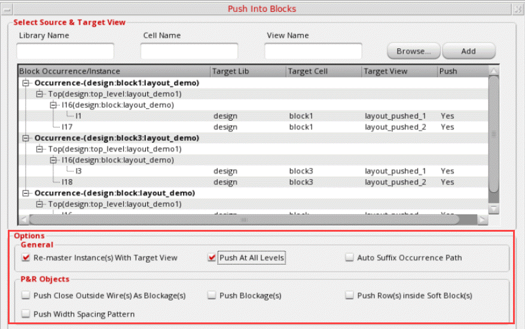
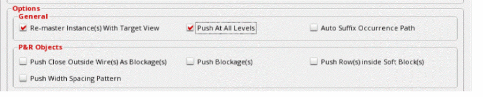
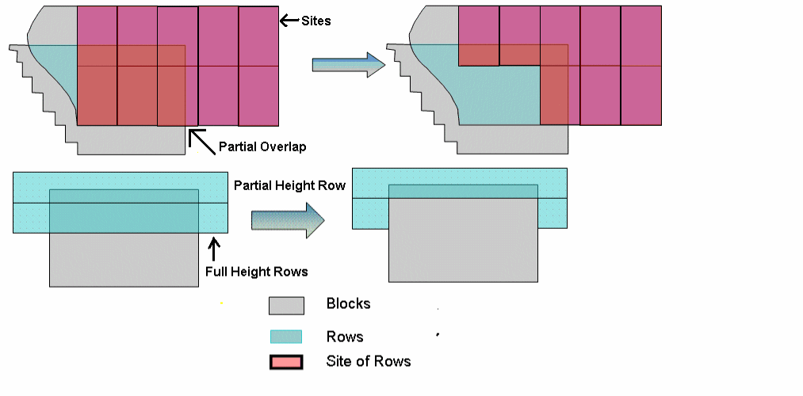

Specifying General Options in Push Into Blocks
To specify general options in Push Into Blocks:
-
Choose Floorplan – Soft Block Update – Push Into Blocks. The Push Into Blocks form appears.
In Layout EXL and higher tiers, choose Plan – Block Planning – Push Into Blocks. - Select the required soft block instances if soft blocks were not selected before invoking the form.
-
Edit the Target Lib, Target Cell, and Target View values directly in the table as per your requirement.
 -
In the Options – General section, select Re-master Instance(s) With Target View to re-master the selected soft block using the target design.
 - Select Push At All Levels to allow objects to be pushed at all levels.
- Select Auto Suffix Occurrence Path to add the occurrence path of the object as the suffix to the target view name.
- In the Options – P&R Objects section, select Push Close Outside Wire(s) As Blockage(s) to push the pre-route objects that do not overlap the soft block, but are in close proximity into the selected soft block instance.
- Select Push Blockage(s) to push blockages inside the soft block instance.
- Select Push All As Blockages to push the routes that have connectivity as blockages and not as routes with pins created on them.
- Select Push Row(s) inside Soft Block(s) to push the standard and custom rows inside the soft block. In case of standard rows, the overlapping part of the row with integer number of sites is pushed.
- Select Push Width Spacing Pattern to push top-level WSP patterns into sub-blocks such that the top-level WSP pattern and the soft block WSP pattern are aligned.
- Click OK.
The top-level power structures are pushed to the block level. The following figure displays that the rows outside the boundary are not pushed when Push Row(s) inside Soft Block(s) is used to push the standard and custom rows inside the soft block.

Related Topics
Pushing Top-level Power Structures into Soft Blocks
Return to top